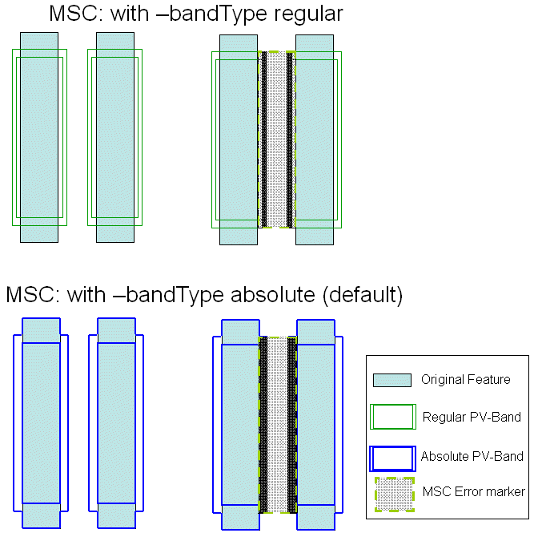

MinSpaceCheck
Usage
Syntax 1
MinSpaceCheck
-layer input_layer_name
-subwindow expr_number
-minDRCspace target_dist
{-minLFDspace space | -LFDspaceRange from_space to_space}
[-security {no | yes}]
[-markerLayer layer_name]
[-referenceLayer “%drawn” | “%retarget” | layer_name]
[-anchorLayer “%reference” | “%drawn” | “%retarget” | layer_name]
[-layerContourCondition contour_condition]
[-checkName cName]
[-priority cPriority]
[-indexFilter value]
[-minMarkerArea area_size]
[-minMarkerWidth width_size]
[-bandType {absolute | regular}]
[-extendMarker extend_dist]
[-minSpaceEnd space_end_dist]
[-ext_side ext_side_value]
[-ratio yes]
[-property {property_list}]
[-comment comment_text]
[-classify handle]
[-appendMarker extra_markers_layer]
[-contourHandle contour_handle]
{-database db_name | -layerOut return_layer_name
| -database db_name -layerOut return_layer_name}
Syntax 2
MinSpaceCheck
-layer input_layer_name
-pdkCheckName check_template
-database db_name
[additional_options]
Description
Performs a spacing check between PV-band geometries in areas where target layer geometries are within a -minDRCspace from one another. If -markerLayer is specified, the check is limited to PV-band data that lies inside geometries on -markerLayer. This check is used for identifying problems such as resist bridging for clear field mask and resist pinching for dark field mask.
MinSpaceCheck (MSC) checks the distance between outside edges of PV-bands. An error is flagged if this distance is less than or equal to -minLFDspace. When space < 0, this check also catches situations in which two PV-bands overlap.
This function writes all errors discovered by the check to the Calibre nmDRC RDB. It also associates a score to each error and writes it to the Check Database specified by the -database argument. The score is calculated as the area of the model-based violation.
If used with a PDK, this function calls a MinSpaceCheck defined in the PDK and runs it for the specified layer, writing check results to the specified database.
Arguments
- -layer input_layer_name
Required keyword and argument defining the name of the layer you are checking. This is the layer for which PV-bands are generated.
- -subwindow expr_number
Required keyword and argument defining the process variation experiment to which this check applies. You must reference individual process variation experiments by their positions in the -opticalSpanList and -doseSpanList arguments to the PVband command used to generate the PV-band data being checked. Thus, expr_number refers to an index to a list of experiments.
Setting expr_number to a value of “expr_number_shift” causes the check to operate on a certain shift for a double-patterned PV-band with overlay (for example, -subwindow 1_N causes the check to only run on the north shift).
- -minDRCspace target_dist
Required keyword and argument used to constrain the checks to those areas where target layer geometries are close enough to one another to be at risk. The function ignores areas where the distance between target features is greater than target_dist (at least 1.5 to 2 times greater).
The value target_dist is greater than the minimum spacing constraint for layer but should not be larger than the minimum spacing plus two times the minimum width.
- -minLFDspace space
Required keyword and argument defining the PV-band spacing violations. PV-band geometries whose external PV-band edges are <= space microns away from other external PV-band edges are flagged as an error.
It measures from one outer edge to the outer edge on the adjacent PV-band and flags all PV‑bands closer than this as errors.
The ‑minLFDspace and -LFDspaceRange keywords and arguments are mutually exclusive.
- -LFDspaceRange from_space to_space
Required keyword and argument set defining the PV‑band spacing violations. PV‑band geometries whose external PV-band edges are > from_space and <= to_space microns away from other external PV‑band edges are flagged as an error.
It measures from one outer edge to the outer edge on the adjacent PV‑band and flags all PV‑bands closer than this as errors.
The ‑LFDspaceRange and -minLFDspace keywords and arguments are mutually exclusive.
- -security {no | yes}
Optional argument defining security privileges. If set to “yes”, the setup file is encrypted in the transcript.
- -markerLayer layer_name
Optional keyword and argument used to constrain the check to those contours that lie within polygons on layer_name. The function ignores areas outside polygons on this layer.
In the case of a Calibre LFD region, if a marker layer is specified, then the marker layer is combined with the Calibre LFD region. If a marker layer is not specified, the Calibre LFD region is the default marker layer.
A -layerOut layer or a derivation of a -layerOut layer should not be used as the input to ‑markerLayer, or a circular layer definition results.
- -referenceLayer “%drawn” | “%retarget” | layer_name
Optional keyword and argument to have the check measurements calculated on a different layer than the input layer to the checks for which the PV-bands have been generated.
You can provide one of the following options as an input to this argument:
“%drawn” — Default. The check measurements are calculated with respect to the drawn layer input to the check with -layer.
“%retarget” — The check measurements are calculated with respect to the retarget layer of the input drawn layer of the check. The check stores the retarget layer name in the PDK.
layer_name — You can define any layer name to have the check measurements done with respect to it. This argument can be used when no PDK is used, and you know the name of the retarget layer.
- -anchorLayer “%reference” | “%drawn” | “%retarget” | layer_name
Optional keyword and argument to have the output error markers from the checks anchored on a different layer than the input drawn layer of the checks, and different from the reference layer input to the check.
You can provide one of the following options as an input to this argument:
“%reference” — Default. The output error markers are anchored to the layer input to -referenceLayer.
“%drawn” — The output error markers of the check are anchored to the drawn layer input to the check with -layer.
“%retarget” — The output error markers of the check are anchored to the retarget layer of the input drawn layer of the check. The check stores the retarget layer name in the PDK.
layer_name — You can define any layer name to have the output error markers anchored to it. This argument can be used when no PDK is used, and you know the name of the retarget layer.
- -layerContourCondition contour_condition
Optional keyword and argument to define a -layer check on any defined contour condition in the PV-band, as opposed to only on the inner or outer PV-band contours.
You can provide one of the following options as an input to this argument:
min — Specifies the command works on the inner PV-band contour.
max — Specifies the command works on the outer PV-band contour.
integer — This integer is the order of the experiment in the subwindow. In the LFD::PVband command, by default subwindows are assumed to be constructed as extensions to previously-created subwindows, so the order of experiments is counted from the first subwindow. If the LFD::PVband -independentWindows option is set, the order of experiments is only counted in the defined subwindow.
process condition list — This must be an ordered list, with 3, 4, 5, 6, 8, or 10 elements defining an explicit process condition. The list must be supplied as follows:
{optical1 dose1 size1 [resist1 etch1] [optical2 dose2 size2 [resist2 etch2]]}
These values must define a process condition (dose and focus settings) that is one of the conditions evaluated by the LFD::PVband or LFD::RegisterContour commands for the layer.
Note:This switch is useful when variations between layers are well-controlled, and you are interested in considering process variations of one layer over the nominal behavior of another.
- -checkName cName
Optional keyword and argument specifying the name to use for the check in the RDB. If not specified, the check in the RDB is assigned a system-generated name as defined in Table 1. Use this keyword to avoid name collisions when performing multiple checks of this type.
- -priority cPriority
Optional keyword and argument specifying a priority for this check. If not specified, the check in the RDB is assigned a system-generated priority based on the -subwindow value and default ranking of 1, as defined in Table 2. cPriority must be an integer value.
- -indexFilter value
Optional keyword and value used to filter out inconsequential errors. Only errors having an index greater than or equal to this value are written to the Check Database.
The index is defined as:

where:


For this check, the area of interest is defined relative to the minimum space.
- -minMarkerArea area_size
Optional keyword and argument defining the minimum size for error markers sent to the Check Database. Any error for which the error marker is smaller than this size is ignored. area_size must be specified in square user units (um2). By default, area_size is 0.
- -minMarkerWidth width_size
Optional keyword and argument defining the minimum width for error markers sent to the scores database. Any error for which the error marker is smaller than this width is ignored. width_size must be specified in user units (um). By default, width_size is 0. This option allows you to remove thin width error markers from Calibre LFD check results, as thin, long errors can negatively affect Calibre LFD runtime.
- -bandType {absolute | regular}
Optional keyword and argument defining the type of PV-band to use when checking for minimum space violations. By default this is the absolute PV-band.

- -extendMarker extend_dis t
Optional keyword and argument defining an extension, specified in user units, to be applied to error markers in the directions of feature edges. By default the extend_dist is 0. Use this keyword when you need to ensure that PV-bands outside the default marker area are factored into PVI calculations.
- -minSpaceEnd s pace_end_dist
Optional keyword and argument providing the definition of an inverse line end error distance (also called space line-end). Any error this close to an inverse line end, or closer, is considered an inverse line-end error, and its error marker are removed from the final error group. The default value for space_end_dist is -minDRCspace.
- -ext_side ext_side_value
Optional keyword and argument defining how drawn layer edges are selected to satisfy the minDRCspace condition, expressed as a real number. This is useful in cases where the tool could miss errors due to non-overlapping edges. The default value for ext_side_value is ‑minLFDspace divided by two.
- -ratio yes
Optional keyword and argument set to “yes” to work in relative mode. If not set, the check works in absolute mode.
- -property {property_list}
Optional keyword set instructing the check to store the measured properties in the RDB. The property_list must be a Tcl list containing Space, SpaceRatio, MaxRunLength, or any combination of these properties. For each error generated, four properties are calculated. PVI is the ratio of the PV-band area associated to the error marker, and the area of the target layer. This property is the default, and it cannot be turned off. Space is the minimum distance between two exterior PV-band edges. SpaceRatio is the ratio between the Space measurement and the space between target layer features. MaxRunLength is the maximum target edge run length.
- -comment comment_text
Optional keyword and argument used with -database for defining the comment text to be reported in the RDB if the check encounters a violation of this type. If not specified, the comment for a MSC violation is “Minimum Space Violation: Improve symmetry. If feature is dense, increase spacing. Reduce surrounding feature width.”
The comment_text must be a single string, so comments containing spaces must be enclosed in braces. For example:
-comment {This is my comment.}- -classify handle
Optional keyword and argument used to define a handle to point to an LFD::ClassifyConfig object.
- -appendMarker extra_markers_layer
Optional keyword and argument used to add the polygons in the extra_markers_layer layer to the output of the check. The output retains the properties on the extra_markers_layer layer supported by the check. This option is not allowed for checks that are tied to an LFD::StructureOptimizer.
- -contourHandle contour_handle
Optional keyword and argument used to perform Calibre LFD checks on specific contour handles. This option is for use with the contour handle generated using the Customizable PV-Bands flow.
- -database db_name
Required keyword and argument defining the RDB to which spacing values for violations identified by the check are written. You must indicate where the violations are written by specifying -database or -layerOut or both.
- -layerOut return_layer_name
Required keyword and argument defining the name of a derived layer to which the violations identified by the check are written. This layer exists in memory and can be referenced in subsequent Calibre nmDRC operations. You must indicate where the violations are written by specifying -database or -layerOut or both.
A -layerOut layer or a derivation of a -layerOut layer should not be used as the input to ‑markerLayer, or a circular layer definition results.
- -pdkCheckName check_template
Required keyword and argument specifying the name of the check template defining how this check is performed.
- additional_options
Optional keywords and arguments allowed only when the security settings within the PDK permit you to modify the settings for this command. These can be any of the options for the non-PDK MinSpaceCheck command. Any additional options specified overrides the options defined within the PDK.
Examples
Verify that all spaces in the polysilicon layer that are smaller or equal than 100nm are at least 60nm apart across all the conditions specified by subwindow 1:
LFD::MinSpaceCheck -layer poly -subwindow 1 -minDRCspace 0.10 \
-minLFDspace 0.06 -database minSpaceCheck.rdb